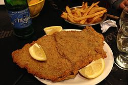

<!DOCTYPE html>
<html lang="en">
</html>
<head>
    <meta charset="utf-8">
    <title>Milanesas</title>
</head>
<body>
    <h1>Milanesas</h1>
    
    <h2>Descripcion</h2>
    <p>Bienvenidos a esta edición de Paulina Cocina que vamos a dedicar a aprender cómo hacer milanesas. Sí, eso mismo. Sé lo que están pensando y bueno, yo, desde esta humilde web te digo, amigue, que sí.Porque no sólo te voy a enseñar la receta, sino que te voy a tirar varias postas para saber cómo hacer milanesas, digo… para saber como hacer LAS MEJORES milanesas de todas.</p>
    <p>Los cortes que se suelen usar son cinco o seis que varían en precio y características: La Cuadrada  y por el mismo precio, con buena proporción de carne y grasa, la Bola de lomo son las más populares. Un poquito más cara está la Nalga y el que nunca falla salvo al bolsillo es el Peceto.</p>
    <h2>Ingredientes</h2>
    <ul>
        <li>2 huevos</li>
        <li>1 cda. de mostaza de Dijon</li>
        <li>Jugo y ralladura de 1 limón</li>
        <li>1 diente de ajo</li>
        <li>Perejil picado</li>
        <li>1 cda. de queso rallado</li>
        <li>Sal y pimienta</li>
    </ul>
    <h2>Pasos</h2>
    <ol>
        <li>Lo primero que vamos a hacer es batir los huevos y agregar dentro todos los ingredientes de la marinada. Vamos a mezclar todo bien.</li>
        <li>Siguiente: Vamos a salar las milanesas y colocarlas dentro de la marinada, tienen que quedar bien embebidas. Las vamos a tapar con papel film y las vamos a llevar a la heladera mínimo por una hora. Cuanto más, mejor.</li>
        <li>Pasado ese tiempo, vamos a sacarlas de la heladera. Luego, milanesa por milanesa,, vamos a empanarlas con el pan rallado, presionando de ambos lados hasta que las recubra bien.</li>
        <li>Finalmente, lo que queda es freírlas en aceite bien caliente hasta que estén doradas y disfrutarlas mucho.</li>
    </ol>
</body>